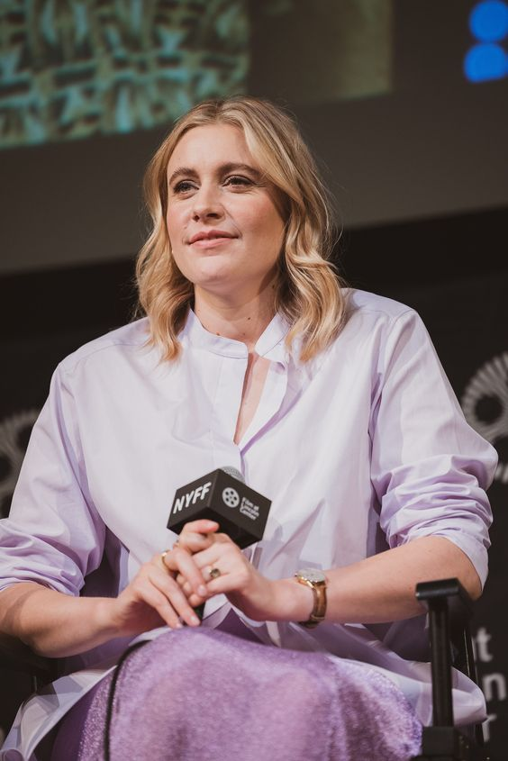

Greta Celeste Gerwig
Profile Details
American Actress, Writer, and Director
Born: August 4, 1983
Sacramento, California, U.S.A.
Spouse: Noah Baumbach
Started from acting in, co-writing, and directing movies,
now known for directing outstanding and
award-winning movies.
Greta Gerwig is known for her innovative and bold approach to filmmaking, having established herself as a succesful writer, actress, and director up until the present. She wrote and directed criticially acclaimed films "Lady Bird" and "Little Women", both of which popular among the youth and earned her multiple nominations and awards. Her latest film project is the famous "Barbie" film released this year 2023.
The reason many people love Greta Gerwig's films is her films often deal with complex and relatable emotions, making them deeply moving and relatable to viewers. Additionally, Greta Gerwig's work often focuses on female characters, which has been appreciated by critics and fans alike for its feminist perspective.

<
>
73 Facts about Greta
Notable Awards
Total of 87 awards and 271 nominations. Here are some of her most notable awards received.
- Academy awards, USA nominated for the movies "Barbie", "Little Women", and "Lady Bird"
- Golden Globes nominated for the movies "Barbie", "Lady Bird", and "Frances Ha"
- BAFTA Awards nominated for the movies "Barbie", "Little Women", and "Lady Bird"
- Critics Choice Awards won "Best Adapted Screenplay" for "Little Women" and "Best Original Screenplay" for "Barbie"